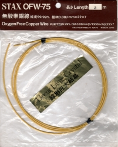
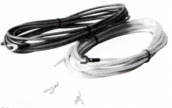
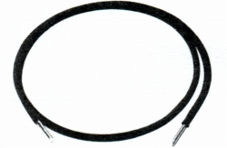
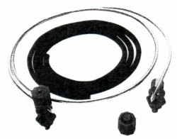
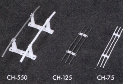
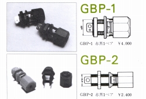
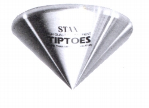
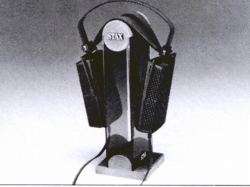
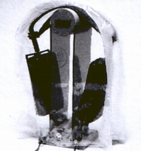
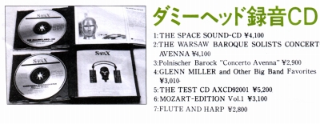

APERIOシリーズ
旧スタックス社では、1980年代後半から会社の末期まで、総合カタログの末尾に「APERIOシリーズ」として、ケーブル類などのアクセサリーを並べていた。広告では1985年に登場し、カタログで確認出来る範囲では1986年2月版から登場、1994年10月版まで掲載されている。「APERIO」の由来は不明で、言語的にはラテン語で意味は（= to uncover, open）、植物が芽を出し、花が咲く季節、という意味らしいが・・・・。以下のような製品があった。
1.ケーブル類
旧スタックスはケーブルの線材にこだわりをもっており、製品付属ケーブルにも、比較的古いものではネグレックス（OFC＝無酸素銅ケーブルの老舗）製、1980年代末にはPC-OCC（PUER
CRYSTAL OHNO CONTINUOUS CASTING
CABLE）製などを使っていた。
線材への研究が高じた故か、自社ブランドのケーブル販売を始めたのが、1983年のOFW-125/75である。同社のケーブルの型番は材質と断面積の組合せである。すなわちOFW-125はOFCで断面積1.25平方�oである。次が1984年発売のLC-OFC550/125/75である。LC-OFC（Linear
Crystal Oxygen-Free
Copper＝線形結晶無酸素銅）の断面5.5/1.25/0.75平方�oケーブルだ。このLC-OFCシリーズから「APERIOシリーズ」としてカタログにのったようだ。その後材質（PC-OCC等）、断面積（最大1256・最小25）を変えて、各種発売された。また長さのバリエーションも1mから100mまで各種あったようだ。




(左からOFW-75、LC-OFC550、PC-OCC CU177ac、PC-OCC AL1256ac。OFW-75の画像は「蒼乃雑記」蒼乃さんの提供。）
2.ケーブルホルダー
旧スタックスではケーブルは一般的なシールド線（同軸ケーブル）よりノン・シールドのケーブルを離して2本使う方が音質的に有利としていた。FMの簡易アンテナや一部のスピーカー・ケーブルに見られるフィーダーケーブルに近い考え方だったようだ。その為、自社ケーブル用に線間距離を適度な間隔に保つケーブルホルダーを発売した。同時期のLC-OFCシリーズに対応して作られ、型番の550/125/75は対応ケーブルの断面積を表す。間隔はCH-75が8�o間隔で3本、CH-125は11�o間隔で3本、CH-550は50�o間隔で2本のケーブルを床から離して設置出来る。外形的にはそれぞれ5.5/3/2�oのケーブルなら他社のものでも使える。20本組・30本組での販売であり、大量に使用する前提の製品。

3.大型バインディングポスト
スピーカーのケーブル接続端子である。元は同社のラウドスピーカーELS-8Xの端子として開発されたもの。端末処理をせず極太のケーブルを直接接続するコンセプトの端子である。大型のGBP-1が1984年、小型だがより厚みのあるボードに対応するGBP-2が1985年発売。

4.Tiptoes
オリジナルは米国のS・マコーミックが考案、スタックスがライセンスを取得し、作成した円錐型のオーディオ機器スペーサー。円錐の頂点を下にしてアンプやスピーカー、プレイヤーなどの下に入れ台座とする。1984年にアルミ製のものが発売され、1985年に日本オリジナルの真鍮製が追加される。当初は単に「Tiptoes」と表記されたが、真鍮製が追加後はアルミ製を「TiptoesA」、真鍮製を「TiptoesB」と表記する資料もある。基本的に3点支持思想の製品なのか、3個1組で販売された。しかし日本では4点支持の方が一般的で、カタログには載っていないが、Stereo
Sound YEAR BOOKなどによれば、1個単位での販売（＊）もあったようだ。

＊カタログには3個1組でアルミ製が\8,400、1個単位では\2,800だった。真鍮製（3個1組 \11,400）については、1個単位の販売を示す資料は手元に無いが、\3,800で販売していたとするネット情報がある。
5.ヘッドホンスタンドHPS-1
元は1980年に愛用者サービスで作ったもの。1988年頃からカタログにのるようになった。今では他社製が何点かあるが、メーカー製のヘッドホンスタンドとしては最初期の製品。現在でも後継品（HPS-2）が販売されている。

6.プロテクションザック
こちらも1990年にイヤスピーカー30周年でプレゼント用に作ったのが始まりである。92年12月版カタログには商品として登場している。通常型に比べ、ほこりに弱いコンデンサー型ヘッドフォンを守る為のカバー。現在は型番(CPC-1）付きで販売している。

7.ダミーヘッド録音CD
1987年の広告で速報として発売が伝えられた。カタログでは1988年版から載り、1992年版まで掲載されていた。しかし、アメリカのレコード会社「STAX」が存在し、先方よりクレームが入ったため、国内での有償販売は中止されたそうである。なお売れなかった在庫は、旧会社末期に愛用者プレゼントに利用されたようだ。

（1992年12月版カタログより）
APERIOシリーズの終焉
旧スタックス時代末期の1995年10月版カタログでは「APERIOシリーズ」の表記はなくなっている。訳って終了したダミーヘッド録音CD以外はまだ残っていたが、ヘッドフォンの延長ケーブルなどとあわせ掲載されている。1996年の価格表ではケーブル類・ケーブルホルダーが消えており、1997年6月版カタログでは真鍮製のTiptoesが、2002年度のカタログではアルミ製Tiptoesが消えて、現在ではヘッドフォンスタンドとプロテクションザックのみが残っている。